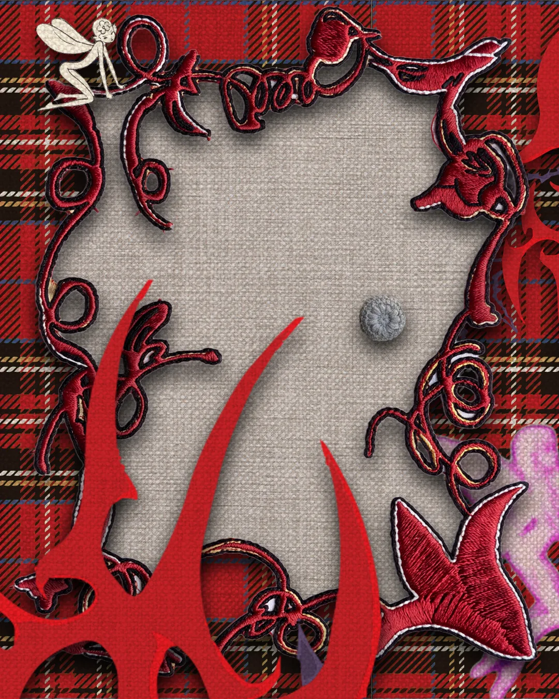
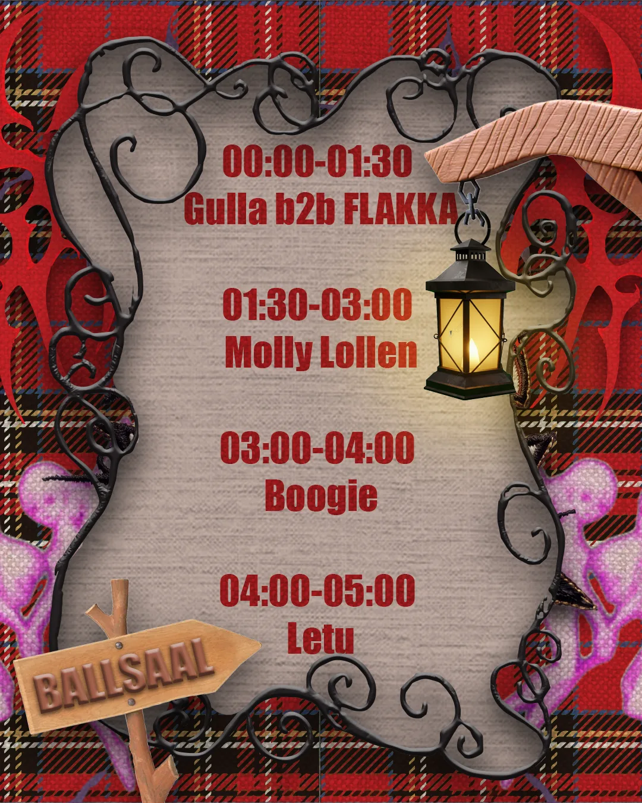
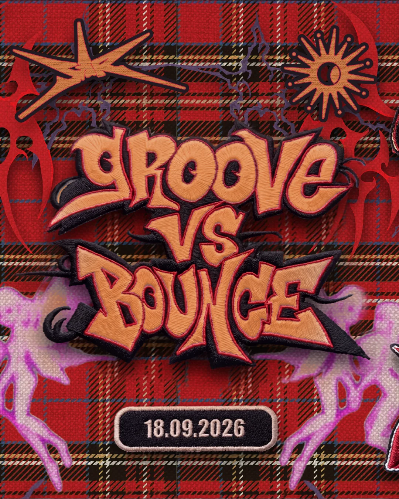
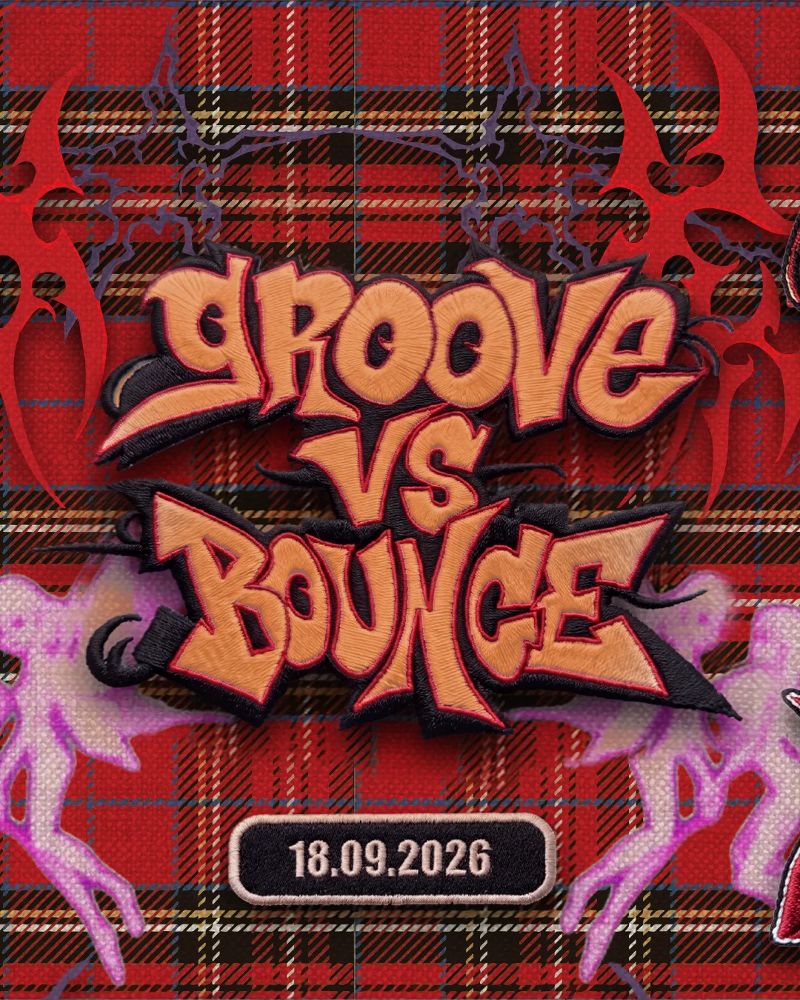
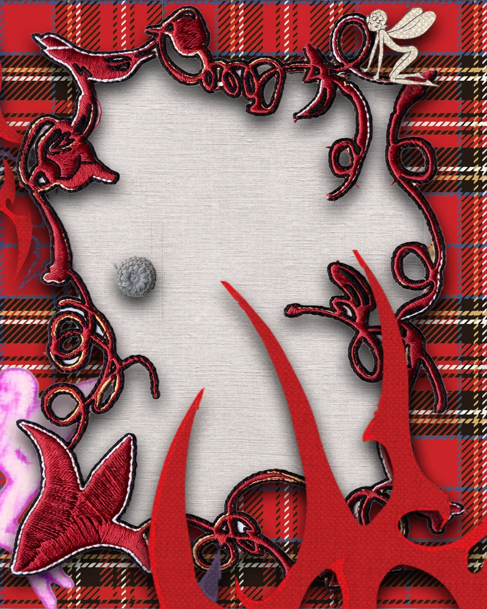
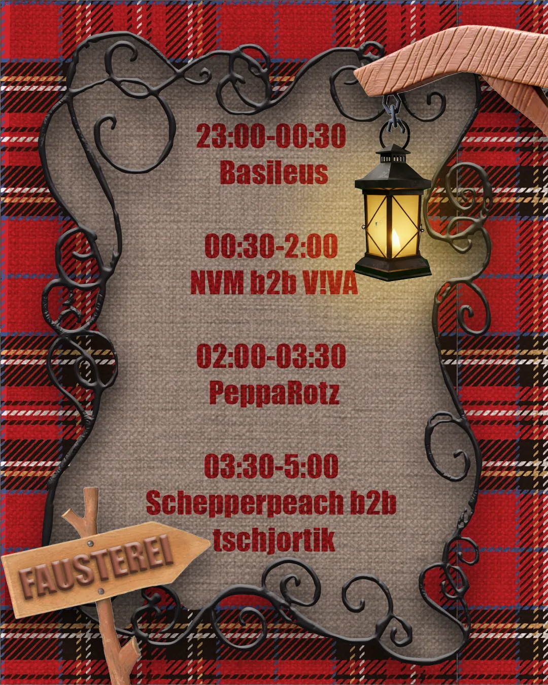
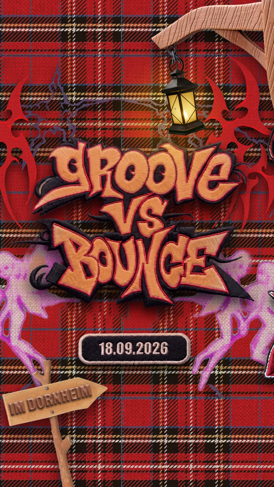
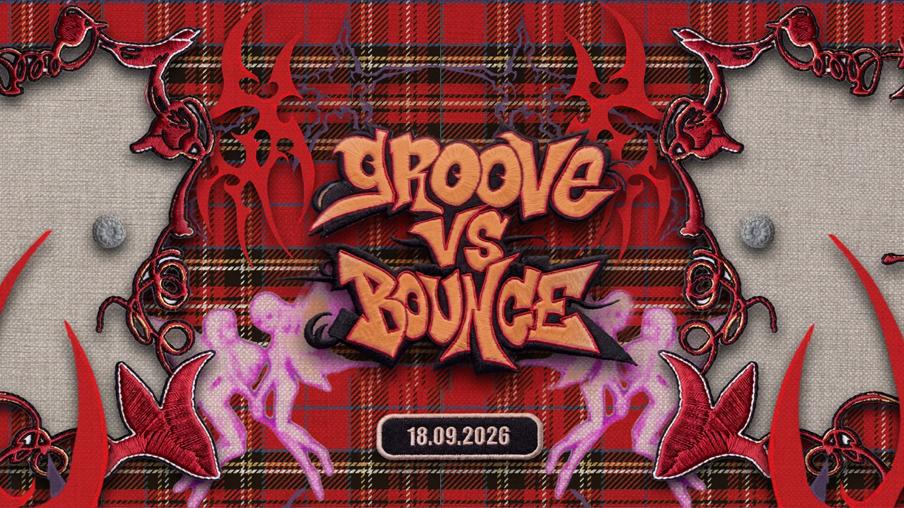
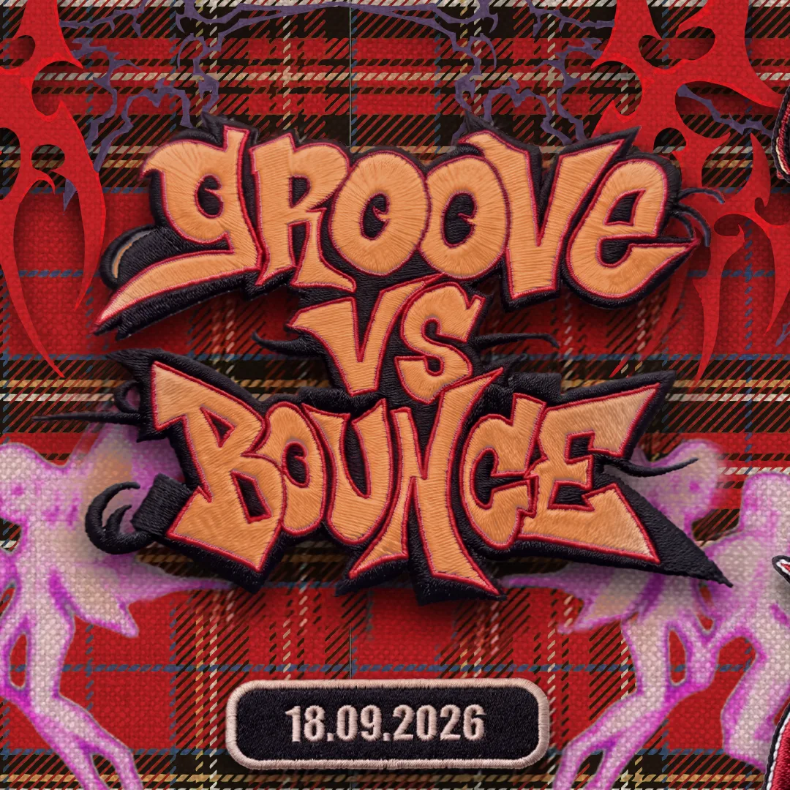

Groove vs Bounce 2 — Event-Kampagne
Ankündigungskampagne für die zweite Ausgabe von Groove vs Bounce: mehrteilige Instagram-Posts mit Slides, Storyformat und Facebook-Event-Bild.









Ähnliches Projekt geplant? Anfrage schreiben oder Leistungen ansehen.